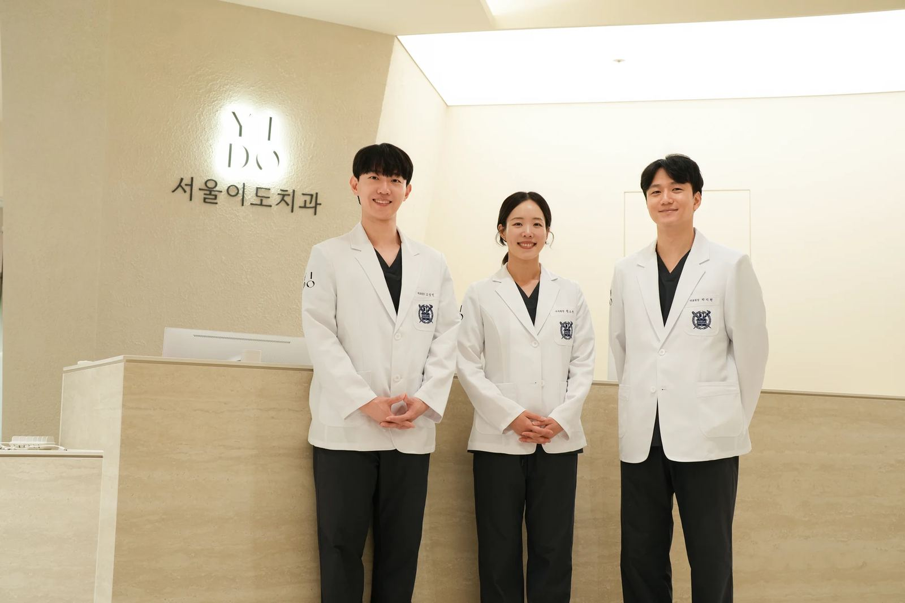

Cover Story · 마포·공덕역 서울이도치과
치료보다 먼저,
치료보다 먼저,
이해할 수 있도록.
치과에서 미처 묻지 못했던 질문과, 집에 돌아와 다시 궁금해진 이야기를 모았습니다. 읽고 나서 상담할 질문을 준비해 보세요.
Contents
이번 호에 실린 글
원장 칼럼 세 편과 상담 준비 노트 다섯 편입니다. 치료를 결정하기 전에 읽어보세요.
Feature · Our care, your story한 가지 치료보다,
한 가지 치료보다,
한 사람의 상황을 먼저 봅니다.
치아의 상태뿐 아니라 불편했던 시간, 치료에 대한 걱정, 앞으로의 생활까지 충분히 듣는 것에서 진료가 시작됩니다.
Seoul Yido Dental Encyclopedia
이해하면,
이해하면,
질문이 달라집니다.
치료 이름을 이미 알고 있다면 사전에서, 무엇이 불편한지만 알고 있다면 증상 찾기에서 시작하세요.
Meet the doctors
서울이도치과 의료진
전문의 자격과 관심 진료분야를 나누어 안내합니다. 자세한 약력은 의료진 소개에서 확인하세요.